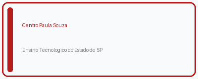
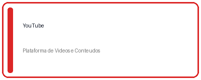
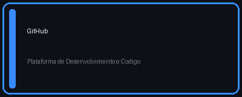
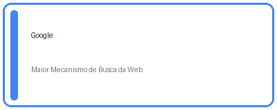
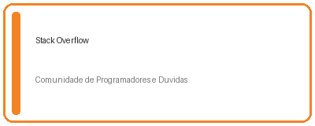

Agenda 12 - Desenvolvimento de Sistemas I | EAD TEC - Centro Paula Souza

Fonte: (Centro Paula Souza, 2026)

Fonte: (YouTube, 2026)

Fonte: (GitHub, 2026)

Fonte: (Google, 2026)

Fonte: (Stack Overflow, 2026)